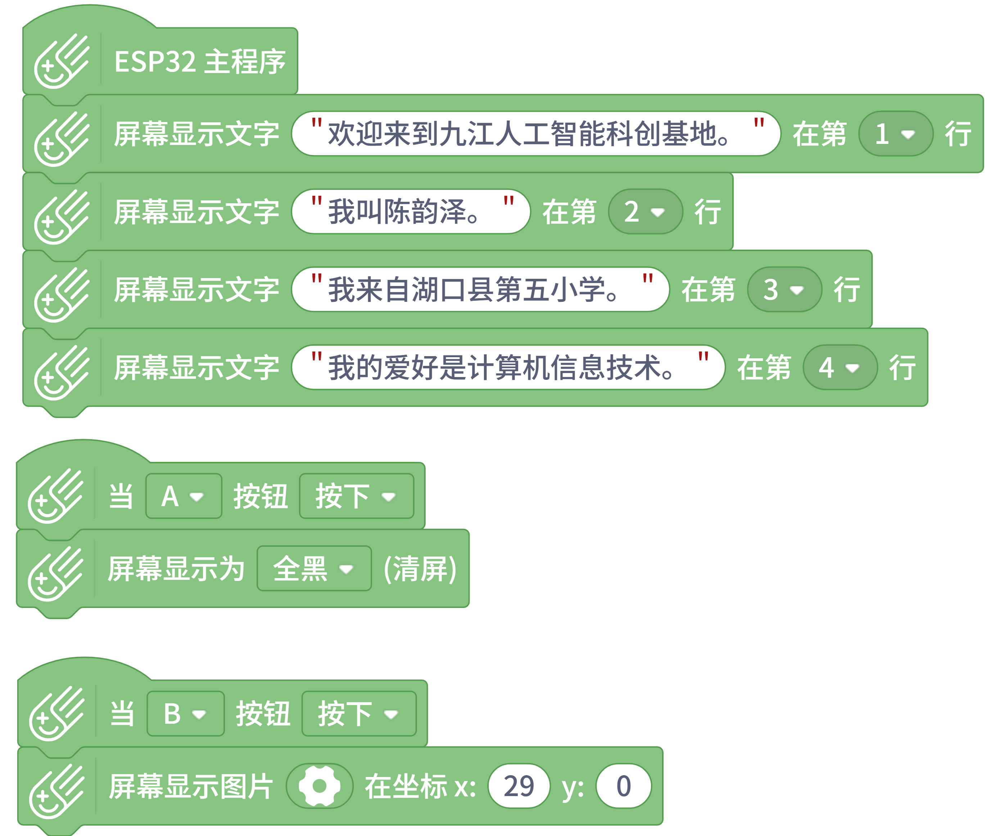
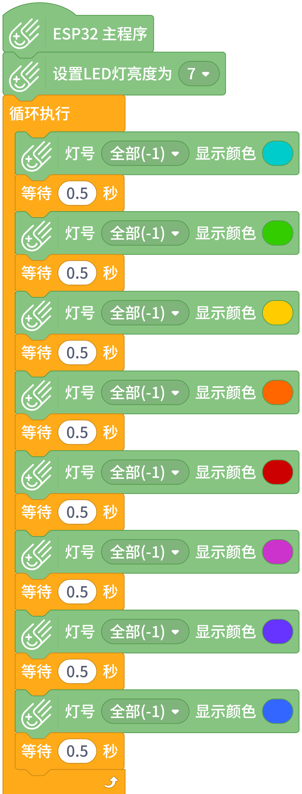

第159篇 日记
2026年02月02日 晴 Mon.
26/02创客培训日记：第一天
期末考试已经在1月27日结束了。我们小学生迎来了寒假。今天上午8时半左右，我背着电脑包（里面装着爸爸的笔记本电脑，他这几天暂时给我用）去九江外国语学校参加创客培训，我一进门，就看到了我们学校的王诺逸，我问他：“我们培训的场地在哪里？”他说：“跟我来，今天我只带你这一次，明天我就不带了哈。”于是，我跟着他走。现在是冬天，但是路旁的树木和花丛仍然开得很好。先走到学生食堂门前，然后绕一下就到了一个“基地”前。这个基地是九江人工智能科创基地（外国语学校分所），英文名是Jiujiang AI Science And Technology Innovation Base.
然后我们进去了，上3楼。然后我跟王诺逸到了一个教室，里面有两排桌子，一排有三张。然后我们选择了一张桌子坐下，各自放下自己的电脑包，把笔记本电脑拿了出来。
这次我们学校（湖口县第五小学）来培训的除了我和王诺逸之外，只有六年级的朱志翔。有学生来这里培训的学校，除了我们学校之外，还有其他一些学校，是九江市长虹小学（有七八人）、九江市第一小学（差不多有五人）、湖口县第二小学（也差不多有五人）、湖口县第三中学附属小学（只有一人）。忘了说了，我是五年级2班的，王诺逸是五年级1班的，朱志翔是六年级6班的。
给我们上课的老师我们不认识，他说：“我姓杨，木易杨。你们就叫我杨老师。”杨老师看上去30岁了，有一点胖。有个学生问他：“你叫什么名字？”杨老师没有回答。
杨老师说：“学习任何一门语言，比如Python, Java, C语言，都要从Hello,World开始。我们先打开编程软件 Mind+，进入上传模式，然后点击左下角的‘拓展’按钮，在主控板里选择‘ESP32掌控板’，然后返回主界面，用‘屏幕显示文字在第__行’积木块来让掌控板显示文字，这些显示功能大家都可以尝试。我们可以显示‘欢迎来到九江人工智能科创基地’、‘我叫XXX’、‘我来自XX小学’、‘我的兴趣爱好是XXX’。然后点击上传程序的按钮来上传到掌控板上。”
于是，我便在掌控板屏幕第1行上显示了“欢迎来到九江人工智能科创基地”，第2行上显示了“我叫陈韵泽”，第3行上显示了“我来自湖口县第五小学”，第4行上显示了“我的兴趣爱好是编程”。
过了一会，杨老师问大家：“你们的程序编好了吗？”大部分同学都编好了，但朱志翔还在打字，因为他只会一根手指打字，所以他的程序编得比较慢。
杨老师继续说：“现在，我们可以实现一个按下掌控板A键时清屏，按下B键时显示一个图片。我们可以用掌控板事件程序的积木，清屏和显示图片的积木都在掌控板的屏幕显示功能哪里。”
于是，我编了一个清屏和显示图片的程序，显示的图片是我的火柴人头像，然后上传到了掌控板上。

杨老师说：“我们先来学习掌控板的LED灯功能。在掌控板上，有3个LED灯。我们可以用掌控板的积木来控制这些LED灯的亮灭和颜色。”然后他用他的电脑写了一个循环控制LED灯
然后我也编了一个流水灯程序，上传到了掌控板上。
